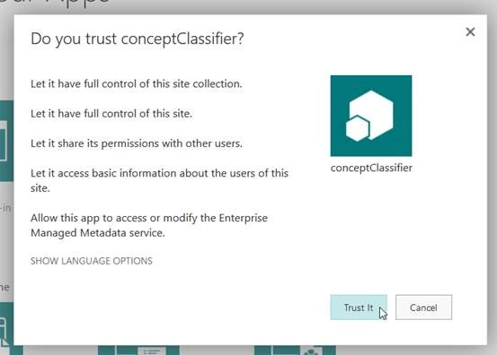
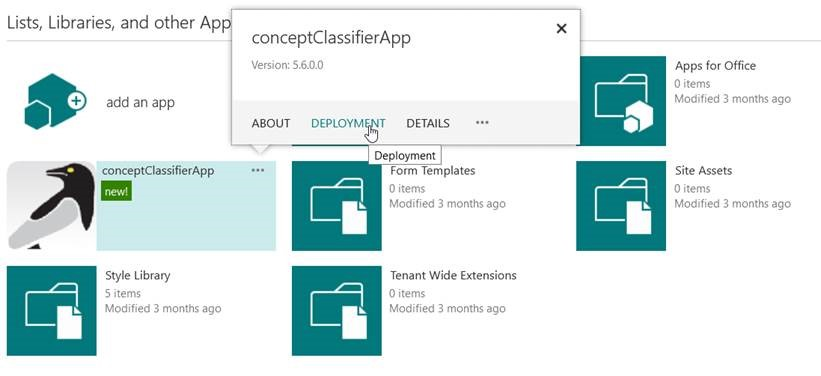
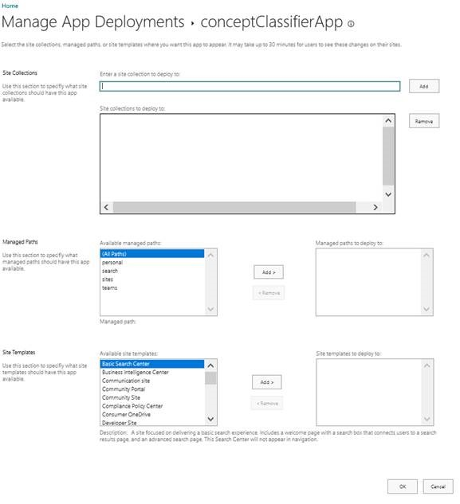

This is part two of the SharePoint app installation KB, it is assumed that you have already installed the NDC SharePoint app.
Note: To enable the app you will need to be a site collection administrator.
To enable the app you will need to add the app to the App Catalog then deploy the app
to the required Site Collections.
Note: you cannot add the app directly to
a Site Collection.
- Navigate to the App Catalog --> Site Contents and ensure you are using the classic experience.
- Click Add an app and select 'conceptClassifierApp'.
-
Click Trust It to accept the app permissions and allow the app to be
installed into the App Catalog.
 -
Once the app has been added to the App Catalog, configure the deployment by
hovering over the app then clicking on the ellipsis in the top right corner of the
app and clicking Deployment.
 - Select how to deploy the app to a combination of specific Sire Collections, by pats, and by a template. Click OK.
Note: The default order of the page is to show the newest app first, so you should see the app as one of the first options (if you do not you can search for “conceptClassifierApp”):
- The app will then be scheduled for deployment to the chosen Site Collections. This can take a few minutes and on completion, conceptClassifierApp will appear in the Site Contents of these Site Collections.

- To complete the setup, navigate to the Site Collection --> Site Contents and select ‘conceptClassifierApp’. This will complete the installation of the app on the Site Collection and allow you to configure the writing of classifications (if licensed).